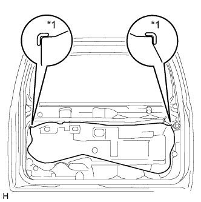

BACK DOOR LOCK > INSTALLATION |
| 1. INSTALL BACK DOOR LOCK ASSEMBLY |
 |
Connect the cable.
Install a new door lock wiring harness seal to the front door lock assembly.
Using a T30 "TORX" wrench, install the back door lock assembly with the 3 screws.
Connect the connector.
| 2. INSTALL BACK DOOR SERVICE HOLE COVER |
|  |
Apply new butyl tape to the back door panel.
Attach the rear door service hole cover using to the reference points on the rear door panel.
| *1 | Reference Point |
| 3. INSTALL BACK DOOR TRIM PANEL ASSEMBLY |
Attach the 15 clips to install the back door trim panel assembly.
Install the bolt.
Install the screw.
Attach the claw to install the cover.
| 4. INSTALL BACK DOOR LOCK COVER |
Attach the 6 claws to install the back door lock cover.
| 5. INSTALL TOOL CASE |
Attach the 2 claws to install the tool case.
| 6. INSTALL UPPER TOOL BOX PANEL SUB-ASSEMBLY |
 |
Attach the 3 claws.
Install the upper tool box panel sub-assembly as shown in the illustration.
| 7. INSTALL BACK DOOR TRIM COVER |
 |
Attach the 4 claws.
Install the back door trim cover as shown in the illustration.
| 8. INSTALL BACK DOOR SIDE GARNISH LH |
Attach the 2 clips and claw to install the back door side garnish.
| 9. INSTALL BACK DOOR SIDE GARNISH RH |
Attach the 2 clips and claw to install the back door side garnish.
| 10. INSTALL BACK DOOR CENTER GARNISH |
Attach the 4 clips to install the back door center garnish.